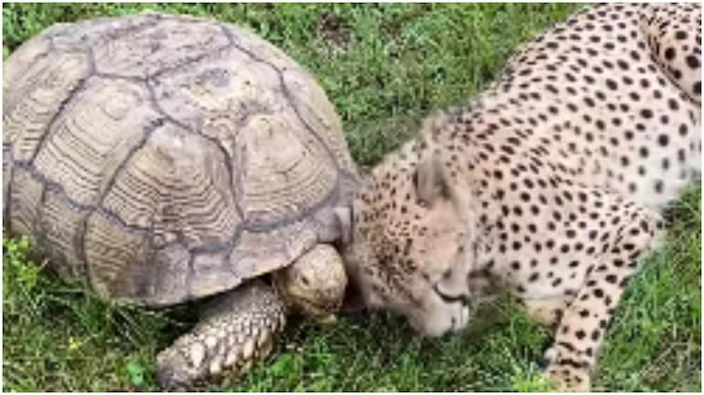

A video of a cheetah and a tortoise hanging out together at the Carson Springs Wildlife park in Florida has gone viral online. The clip has been viewed a million times.
Only if you are living under a rock, you might not know about the arrival of eight cheetahs in India. Prime Minister Narendra Modi released eight cheetahs that were brought from Namibia on his birthday on September 17 in their new home, Kuno National Park in Madhya Pradesh. Actually, the wild cats were declared locally extinct in India in 1952. So, when a video of a cheetah hanging out with a tortoise surfaced online, it obviously went viral.
The now-viral video was shared by a page called Carsons Springs Wildlife on Instagram. It is a not-for-profit animal park located in Gainesville, Florida. In the short clip, the cheetah can be seen rubbing its head lovingly on the tortoise's shell.
"Tuesday and Penzi are best friends. Come see them at Carson Springs," reads the caption of the post.